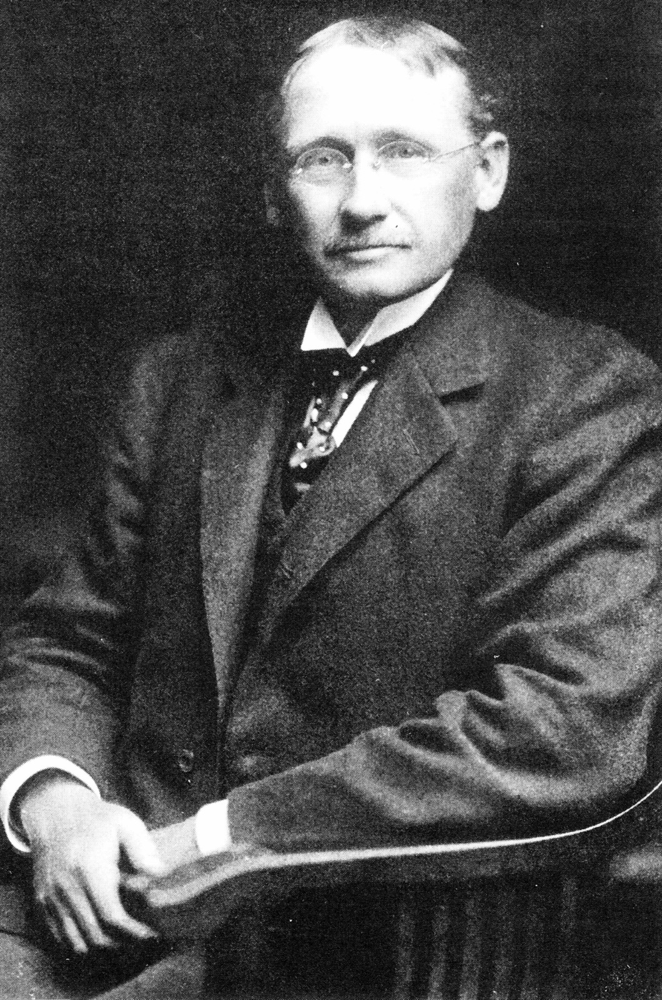

Taylor was an American mechanical engineer and management consultant who is often referred to as the "father of scientific management."

Taylor's focus was primarily on optimizing work efficiency and productivity by studying work processes and the interaction between workers and their tools or equipment. He emphasized the importance of designing tasks and workspaces to accommodate human capabilities and reduce physical strain, ultimately improving worker performance.
Field: Organisational Structure
Major Contribution: Time and Motion Studies and Standardization
Worked: Bethlehem Steel Company
Era: 1910
Best Quote: "In the past, man was first. In the future, the system must be first.”